At a glance
A KPI and business-health dashboard for small businesses. You upload an Excel or CSV file and get KPIs, charts, explanations of what changed, forecasts and a weekly CEO report, with no BI expertise needed.
Overview
SlateMetric is built for small-business owners, founders and operators who run on spreadsheets. Tools like Power BI, Tableau and Looker are too complex and expensive for them. The promise is simple: upload a spreadsheet and get an executive dashboard, explanations and a forecast in under a minute.
I designed it as a four-phase value ladder and built the UI for all four phases:
- Dashboard: upload, auto-detect columns, KPIs, charts, filters
- Intelligence: what happened, why, and what to do next
- Predictive: forecasts, what-if simulation, goal planning
- Premium: natural-language queries, opportunity finder, benchmarks, weekly CEO report
It is priced for the Indian market, with Free, Growth and Team plans billed through Razorpay.
The problem
Most small businesses already have their sales data in Excel. What they lack is a quick way to answer three questions:
- How are we doing?
- Why did this number change?
- What should we plan for?
Hiring an analyst or learning a BI tool isn't realistic for them. The result is decisions made on gut feel.
The solution
A guided flow: upload → validate → map columns → dashboard.
- Smart column mapping recognises common aliases ("amt", "sales", "revenue"), so users don't need to reshape their data.
- The dashboard then adds statistical intelligence: anomaly alerts, root-cause panels, a health score, forecasts with confidence bands, and a weekly CEO report.
- Plan-based feature gating provides a clear upgrade path.
Key features
Data intake
- Drag-and-drop upload for
.xlsx,.xlsand.csv, with client- and server-side size limits - Server-side parsing and validation, with an issue report and row preview
- Smart, editable column mapping with reset-to-auto-detected
- Duplicate-upload detection and import session restore
- Downloadable sample templates for 5 business types (retail, SaaS, restaurant, service, orders)
Dashboard
- KPI cards: revenue, growth, orders, AOV, top product, top region, trends
- Charts: revenue trend, product bar, region donut, order trend
- Date, product, region and category filters with empty states
Intelligence (statistical)
- Summary card, root-cause panel, and anomaly alerts using z-scores and a rolling baseline
- Recommended actions and a business-health gauge
Predictive
- Revenue forecast with a confidence band, a what-if simulator with sliders, a goal planner and forecast-risk cards
Premium
- A natural-language query bar that parses intent into filters and answers
- Hidden-opportunity cards, industry benchmarks, and a weekly CEO report with print-to-PDF
Account & billing
- Clerk authentication, onboarding, and Free / Growth / Team plans through Razorpay, with plan state in Postgres
How it works
Files are parsed and validated server-side, mapped to a canonical schema, then aggregated into KPIs. Intelligence, forecast and premium modules run as pure TypeScript libraries over the mapped rows. This keeps them testable and fast.

Tech stack
| Layer | Technologies |
|---|---|
| Framework | Next.js 15 (App Router), React 19, TypeScript 5.7 |
| Styling & motion | Tailwind CSS 3.4, GSAP 3, Three.js / React Three Fiber |
| Charts | Recharts 3 |
| Auth | Clerk |
| Database | Neon serverless PostgreSQL, Drizzle ORM |
| Payments | Razorpay (INR) |
| File parsing | SheetJS |
| Code organisation | lib/ai, lib/predictive, lib/moat, column mapper, import validator, aggregation |
Engineering highlights
- A 28-route Next.js App Router application with typed routes. Type-checks and production-builds cleanly.
- Robust import pipeline: server-side validation, issue reports, duplicate detection and session restore for messy real-world spreadsheets.
- Alias-based column mapping that turns arbitrary spreadsheet headers into a canonical sales schema.
- Statistical intelligence without LLM cost: z-score and rolling-baseline anomaly detection, a health score and forecast confidence bands.
- Modular domain libraries (
ai/,predictive/,moat/) separated from the UI, ready for unit testing and a future LLM layer. - Plan-based feature gating through a single
use-planhook.
Challenges & what I learned
- Messy spreadsheets. Real files have inconsistent headers, dates and currencies. Approach: a validator with an issue report, plus an editable, alias-aware column mapper. Lesson: data onboarding UX decides whether analytics products succeed.
- Delivering "AI" value affordably. Approach: start with deterministic statistics (anomalies, root cause, forecasts) that are explainable and cost nothing per request, and plan an LLM narrative layer grounded in the computed metrics. Lesson: ground AI in computed facts rather than raw data.
- Scoping a big vision. Approach: a four-phase value ladder, with every phase visible in the product. Lesson: phasing makes a large roadmap tangible for users and investors.
- Moving from demo to production. Approach: now hardening persistence, payments and team workspaces. Lesson: the last 20% (data storage, billing lifecycle, collaboration) is where SaaS becomes real.
Status & what's next
The UI for all four phases is built, and the app type-checks and builds for production. Next steps:
- persist datasets in Postgres
- complete the subscription lifecycle and webhooks
- wire up workspaces with invites and roles
- deliver real email and WhatsApp weekly reports
- add Shopify, Razorpay, Google Sheets and Tally/Zoho connectors
- add an LLM-backed "chat with your data" layer grounded in computed KPIs